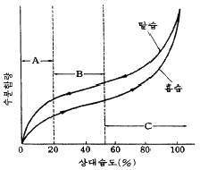

식품산업기사(구) (2004-08-08 기출문제)
1과목: 식품위생학
1. 포도주 양조나 전분 제조시 살균 효과와 건조과일 등의 갈변방지 효과를 가지지만 천식환자에게 그 독성이 문제 될 수 있는 것은?
- 소듐 사이클라메이트
- 벤조피렌
- 아질산염
- 아황산염
(정답률: 알수없음)

2. 식품첨가물 중 화학 합성품의 심사에서 가장 중점을 두는 사항은?
- 안전성
- 함량
- 효력
- 영양가
(정답률: 알수없음)
3. 다음 물질 중 보존료가 아닌 것은?
- 안식향산
- 부틸히드록시아니졸
- 소르빈산
- 데히드로초산
(정답률: 알수없음)
4. 다음 중 식용 버섯인 것은?
- 싸리버섯
- 큰붉은 젖버섯
- 무당버섯
- 화경버섯
(정답률: 알수없음)
5. 피마자씨 중에 함유되어 있는 독성물질은?
- 리신(ricin)
- 아미그달린(amygdalin)
- 고시폴(gossypol)
- 솔라닌(solanine)
(정답률: 55%)
6. 살모넬라균의 일반성상 중 잘못된 것은?
- 아포를 형성하지 않는 Gram 음성의 간균이다.
- 호기성 또는 혐기성균이다.
- 생육 최적온도는 37℃, 최적 pH는 7-8이다.
- 보통 배지에서 잘 발육하지 않으며 인돌(indole)을 생산한다.
(정답률: 알수없음)
7. 식품 공업에 있어서 폐수의 오염도를 판명하는데 필요치 않는 것은?
- DO
- BOD
- WOD
- COD
(정답률: 80%)
8. 인축공통전염병의 원인 세균이 아닌 것은?
- 결핵균
- 브루셀라균
- 탄저균
- 살모넬라균
(정답률: 알수없음)
9. 식중독을 방지할 때 중요하지 않은 것은?
- 예방접종
- 냉장과 냉동
- 손의 청결
- 가열조리
(정답률: 알수없음)
10. 메틸수은으로 오염된 어패류를 섭취하면 수은에 의한 축적성 중독을 일으킨다. 이러한 공해병은?
- PCB 중독증
- 이타이이타이병
- 미나마타병
- 열중증
(정답률: 알수없음)
11. 해산어에 존재하는 기생충은?
- 유구조충
- 무구조충
- 아니사키스(Anisakis)
- 광절열두조충
(정답률: 알수없음)
12. 화농성 질환자가 식품을 취급하였다. 감염되기 쉬운 식중독균은?
- 살모넬라균
- 포도상구균
- 장염 비브리오균
- 보툴리누스균
(정답률: 알수없음)
13. 식품용 용기재료 중에서 장기간 사용하면 표면이 꺼칠꺼칠하게 되며 포르말린의 용출이 심하여 위생상 가장 문제가 큰 열경화성 수지는?
- 석탄산수지
- 멜라민수지
- 요소수지
- 페놀수지
(정답률: 알수없음)
14. 대장균군의 추정, 확정, 완전시험에서 사용되는 배지가 아닌 것은?
- TCBS agar
- Lactose bouillon
- EMB agar
- BGLB
(정답률: 알수없음)
15. 상업적 가열살균기준이 되는 세균은?
- Clostridium botulinum
- Escherichia coli
- Salmonella typhi
- Staphylococcus aureus
(정답률: 알수없음)
16. 다음 중 통조림 식품 중 납과 주석이 용출되어 내용 식품을 오염시킬 우려가 가장 큰 것은?
- 어육
- 식육
- 과실
- 연유
(정답률: 알수없음)
17. 식품의 초기부패 현상의 식별법이 아닌 것은?
- 히스타민(histamine)의 함량 측정
- 생균수 측정
- 휘발성 염기질소의 정량
- 환원당 정량
(정답률: 알수없음)
18. 다음 식물의 주된 독성분이 알칼로이드(alkaloid)인 것은?
- 맥각
- 청매
- 수수
- 강낭콩
(정답률: 알수없음)
19. 방사능 핵종 중 Sr90이 식품위생상 가장 문제되는 이유는?
- 생물학적 반감기가 길기 때문
- 물리적 반감기가 짧기 때문
- 물리적 반감기가 길기 때문
- 유효반감기가 길기 때문
(정답률: 알수없음)
20. 쥐에 의해 감염되는 질병이 아닌 것은?
- 유행성 출혈열
- 살모넬라증
- 웰시병
- 폴리오
(정답률: 알수없음)
2과목: 식품화학
21. 다음 중 5탄당이 아닌 것은?
- 자일로오스(xylose)
- 리보오스(ribose)
- 아라비노오스(arabinose)
- 프럭토오스(fructose)
(정답률: 알수없음)
22. 식품을 오래 보존하다 보면 고유의 냄새가 없어지게 된다. 그 주된 이유는 무엇인가?
- 식품의 냄새성분은 휘발성이기 때문이다.
- 식품의 냄새성분은 친수성이기 때문이다.
- 식품의 냄새성분은 소수성이기 때문이다.
- 식품의 냄새성분은 비휘발성이기 때문이다.
(정답률: 알수없음)
23. 마이야르(Maillard) 반응에 관한 설명 중 틀린 것은?
- 온도가 상승하면 갈변이 촉진된다.
- pH 3 이하에서는 갈변이 촉진된다.
- 건조식품에서 잘 일어날 수 있다.
- 환원당은 비환원당에 비해 갈변속도가 크다.
(정답률: 알수없음)
24. 글리코겐(glycogen)의 특징을 설명한 것 중 틀린 것은?
- 동물에만 분포한다.
- 포도당이 전분과 같은 형식으로 결합한 것이다.
- 요오드 반응을 나타낸다.
- 가지 구조를 갖지 않는다.
(정답률: 알수없음)
25. 유지의 자동산화에 관여하는 요인이 아닌 것은?
- 유지의 이중결합 수
- 금속
- 수분
- 유지의 분자량
(정답률: 알수없음)
26. 땅콩 및 곡류 저장 중 Aspergillus flavus 의 오염에 의해 생성되는 독성물질은?
- aflatoxin
- citrinin
- islanditoxin
- 맥각(ergot)
(정답률: 알수없음)
27. 아미노산의 성질 중 틀린 것은?
- 천연단백질의 가수분해물은 대부분 α -아미노산이다.
- 글리신(glycine) 이외는 광학활성을 가지며 양성(兩性) 화합물이다.
- 등전점에서 단백질의 용해도는 가장 크고 삼투압은 가장 적다.
- 아미노산 정량법에는 Van slyke 법도 있다.
(정답률: 알수없음)
28. 다음 그림은 식품의 일반적인 등온탈(흡)습곡선이다. 미생물이 성장하기 좋은 영역은 어느 부분인가?

- A 영역
- B 영역
- C 영역
- A영역, B영역, C영역 모두
(정답률: 알수없음)
29. 가지의 청자색깔에 주로 해당되는 색소는?
- Carotene 류의 lycopene
- Xanthophyll 류의 lutein
- Anthocyanin 류의 nasunin
- Flavonoid 류의 apigenin
(정답률: 알수없음)
30. 지방대사에서 당뇨병, 기아상태, 지방의 대량섭취시에 생성되는 물질은?
- 케톤체(ketone body)
- 피루빈산(pyruvic acid)
- 글리코겐(glycogen)
- 젖산(lactic acid)
(정답률: 알수없음)
31. 효소에 의한 갈색화 반응을 억제하기 위한 방법으로 적당하지 않은 것은?
- 가열하여 효소를 불활성화시킴
- 저온저장
- 산소의 제거
- 산화제의 첨가
(정답률: 알수없음)
32. 토코페롤(Tocopherol)과 가장 관계 있는 것은?
- 노화촉진 작용
- 항산화 작용
- 가수분해 작용
- 에스테르화 작용
(정답률: 알수없음)
33. 유당(lactose)에 대한 설명 중 틀린 것은?
- α -glucose의 C1의 glycoside성 OH기와 α - 또는 β -glucose의 C4의 OH기가 축합된 화합물이다.
- 포유동물의 유즙 중에 존재하며 식물계에서는 발견되지 않는다.
- 보통 유즙 중에는 α : β = 2 : 3의 비율로 존재한다.
- 보통 효모에 의해 발효되지 않는다.
(정답률: 알수없음)
34. 콜로이드 입자가 만드는 용액이 아닌 것은?
- 시럽
- 육수
- 우유
- 소스
(정답률: 알수없음)
35. 다음 비타민 중 장내세균에 의해 합성되어 사용되는 것은?
- 비타민 A
- 비타민 D
- 비타민 E
- 비타민 K
(정답률: 알수없음)
36. 기름에 물이 분산된 유화형태는?
- 우유
- 마요네즈
- 아이스크림
- 버터
(정답률: 알수없음)
37. 튀김에 사용한 유지에서 발생하는 현상은?
- 유리지방산 감소
- 점도 감소
- 요오드가 감소
- 불포화 지방산의 증가
(정답률: 알수없음)
38. 다음 무기질의 기능이 틀린 것은?
- Na - 세포외액에 많고 삼투압 조절, 산· 알칼리 평형에 필요
- Cu - 헤모글로빈(hemoglobin) 형성시에 Fe의 흡수와 이용에 필요
- Co - 비타민 B12의 구성성분으로 조혈작용에 필요
- I - 인슐린(insulin)의 구성성분이며 디카르복실라아제(decarboxylase)의 활성화에 필요
(정답률: 알수없음)
39. 염기성 아미노산에 속하지 않는 것은?
- 라이신(lysine)
- 아르기닌(arginine)
- 히스티딘(histidine)
- 이소루이신(isoleucine)
(정답률: 알수없음)
40. 15 %의 설탕용액에 0.15 %의 소금 용액을 동량 가한 용액의 맛은?
- 짠맛이 증가한다.
- 단맛이 증가한다.
- 단맛이 감소한다.
- 맛에 별다른 변화가 없다.
(정답률: 알수없음)
3과목: 식품가공학
41. 튀김기름의 품질을 평가하는 데 중요한 성질과 가장 거리가 먼 것은?
- 색과 맛
- 튀김기름의 불포화도
- 튀길 때의 기름의 소비량
- 튀길 때의 점도의 변화
(정답률: 알수없음)
42. TFS(tin free steel) can의 특성이 아닌 것은?
- 납땜이 잘 안되는 것이 흠이다.
- 주석보다 값이 싸다.
- 도료의 접착이 좋지 않다.
- 금속광택이 석판보다 떨어진다.
(정답률: 알수없음)
43. 우리나라의 원유 가격을 결정하는 요인이 아닌 것은?
- 체세포수
- 지방함량
- 세균수
- 유당함량
(정답률: 알수없음)
44. 훈연의 효과와 관계가 먼 것은?
- 저장성, 향기 및 맛 부여
- 알데히드의 방부성 물질로 세균의 발육저지
- 색깔 부여
- 수분의 건조 및 악취제거
(정답률: 알수없음)
45. 식빵 제조 공정에 해당되지 않은 공정은?
- 반죽
- 발효
- 가스 빼기
- 제분
(정답률: 알수없음)
46. 마카로니는 무슨 면인가?
- 냉면
- 선절면
- 연면
- 압출면
(정답률: 알수없음)
47. 과실은 익어가면서 녹색이 적색 또는 황색 등으로 색깔이 변하며, 조직도 연하게 된다. 익은 과실의 조직이 연해지는 것은?
- 전분질이 가수분해되기 때문
- 펙틴(pectin)질이 분해되기 때문
- 색깔이 변하기 때문
- 단백질이 가수분해되기 때문
(정답률: 알수없음)
48. 비스킷 제조 공정 중 세가지 원리에 해당되지 않은 것은?
- 성형
- 혼합
- 숙성
- 굽기
(정답률: 알수없음)
49. 식품내 함유된 천연 항산화제는?
- 비타민 D
- 토코페롤
- 콜레스테롤
- 스테로이드
(정답률: 알수없음)
50. 우유의 가공 공정에서 균질화의 목적이 아닌 것은?
- 미생물의 증식억제
- 지방의 분리 방지
- 커드(curd)의 연화
- 지방구의 미세화
(정답률: 알수없음)
51. 토마토 케찹 제조시 원료가 아닌 것은?
- 토마토 퓨레
- 식초
- 구연산칼슘
- 설탕
(정답률: 알수없음)
52. 돼지의 갈비살 부위를 염지(鹽漬)하여 가공한 제품은?
- 프레스햄(Press ham)
- 소시지(Sausage)
- 베이컨(Bacon)
- 로스햄(Roast ham)
(정답률: 알수없음)
53. 고추장 제조공정에서 코오지를 넣고 전분을 당화할 때 온도가 낮아지면 발생하는 현상은?
- 효모의 번식으로 알콜맛이 난다.
- 초산균의 번식으로 신맛이 난다.
- 젖산균의 번식으로 신맛이 난다.
- 부패세균의 번식으로 부패취가 난다.
(정답률: 알수없음)
54. 소시지(Sausage)를 제조할 때 원료육에 향신료 및 조미료를 첨가하여 혼합하는 기계는?
- meat chopper
- silent cutter
- stuffer
- packer
(정답률: 알수없음)
55. 경화유 제조에 있어 중요한 요건이 아닌 것은?
- 기름의 정제도
- 수소의 순도
- 촉매의 작용력
- 산소의 농도
(정답률: 알수없음)
56. 다음의 과즙 청징 방법 중 색소 및 비타민의 손실이 가장 큰 것은?
- 펙티나아제(pectinase) 사용
- 난백처리
- 규조토 사용
- 젤라틴 및 탄닌처리
(정답률: 알수없음)
57. 빵의 탄력성과 관계 있는 것은?
- 글루텐(gluten)
- 라이신(lysine)
- 젤라틴(gelatin)
- 렌닌(rennin)
(정답률: 알수없음)
58. 액란을 가공하기 전에 계란에 함유된 당분(glucose)을 제거하는 것이 보통이다. 신선한 액란을 제당과정 없이 건조했을 때 생기는 변화에 해당되지 않는 것은?
- 용해도의 감소
- 식품기능성의 감소
- 변색
- 점도의 감소
(정답률: 알수없음)
59. PVDC(poly vinylidene chloride) 필름이, 부패되기 쉬운 축산 및 어류 가공식품 포장에 좋은 이유가 아닌 것은?
- 내약품성과 내유성(耐油性)의 식품포장에 좋다.
- 태양광선에 대한 저항성이 좋기 때문에 육(肉)의 변색방지에 좋다.
- 가스 투과성이 매우 높기 때문에 좋다.
- 습기를 방지하는 필름에 최적이기 때문에 좋다.
(정답률: 알수없음)
60. 여름철 간장에 생기는 산막효모의 생성과 거리가 먼것은?
- 간장의 농도가 희박할 때
- 당분이 너무 적게 들어 있을 때
- 소금의 함량이 적을 때
- 간장을 달인 온도가 낮을 때
(정답률: 알수없음)
4과목: 식품미생물학
61. 다음 포자 중 무성포자(asexual spore)인 것은?
- 난포자(oospore)
- 자낭포자(ascospore)
- 접합포자(zygospore)
- 후막포자(chlamydospore)
(정답률: 알수없음)
62. Gram 염색은 어느 때 사용하는가?
- 세균의 세포벽 차이에 의한 분류에
- 세균의 편모, 방선균의 포자 관찰에
- 유포자 곰팡이와 무포자 곰팡이의 분류에
- 유포자 효모와 무포자 효모의 분류에
(정답률: 알수없음)
63. 간장의 발효에 관여하는 주된 미생물로만 짝지워진 것은?
- Aspergillus awamori, Saccharomyces cerevisiae
- Pediococcus halophilus, Zygosaccharomyces rouxii
- Lactobacillus bulgaricus, Hansenula anomala
- Clostridium butylicum, Candida utilis
(정답률: 알수없음)
64. 효소의 정제법이 아닌 것은?
- 염석, 투석
- 젤(gel) 여과법
- 라이소자임(lysozyme) 처리법
- 이온교환 크로마토그래피(chromatography)
(정답률: 알수없음)
65. 통기 배양시의 공기 송입장치는?
- baffle plate
- sparger
- paddle
- turbine
(정답률: 알수없음)
66. 우유 중의 세균 오염도를 간접적으로 측정하는데 주로 사용하는 방법은?
- 산도 시험
- 알콜침전 시험
- 포스포타아제 시험
- 메틸렌블루(methylene blue) 환원 시험
(정답률: 알수없음)
67. 버섯에 대한 설명 중 틀린 것은?
- 대부분은 담자균류에 속한다.
- 담자균류는 균사에 격막이 있다.
- 2차균사는 단핵균사이다.
- 동담자균류와 이담자균류가 있다.
(정답률: 알수없음)
68. Bacteriophage의 설명으로 틀린 것은?
- 세균에 감염 기생하여 기생적으로 증식한다.
- 생물과 무생물의 중간 위치이다.
- DNA와 효소를 모두 가지고 있다.
- 살아있는 세포에서만 기생한다.
(정답률: 알수없음)
69. 식품가공에 유용한 미생물이 아닌 것은?
- Saccharomyces cerevisiae
- Aspergillus oryzae
- Bacillus natto
- Penicillium glaucum
(정답률: 알수없음)
70. RNA, DNA의 주성분은?
- methionine
- biotin
- pentose
- peptide
(정답률: 알수없음)
71. 곰팡이가 분비하는 효소로 볼 수 없는 것은?
- 전분당화효소(amylase)
- 펙틴분해효소(pectinase)
- 알콜발효효소(zymase)
- 단백질분해효소(protease)
(정답률: 알수없음)
72. 콩과식물의 뿌리에 기생하며, 공중질소를 고정시켜서 농사에 도움을 주는 뿌리혹 박테리아는?
- Nitrobacter 속
- Rhizobium 속
- Acetobacter 속
- Gluconobacter 속
(정답률: 알수없음)
73. Rhizopus 속과 Absidia 속 곰팡이의 형태를 비교한 것이다. 올바르지 않은 것은?
- Rhizopus 속, Absidia 속 모두 접합포자를 형성한다.
- Rhizopus 속은 가근이 있으나 Absidia 속은 가근이 없다.
- Rhizopus 속, Absidia 속 모두 포복지가 발달하였다.
- Rhizopus 속 포자낭은 구형이나 Absidia 속 포자낭은 서양배의 모양이다.
(정답률: 알수없음)
74. 초산균이 아닌 것은?
- Acetobacter aceti
- Lactobacillus acidophilus
- Acetobacter acetosum
- Acetobacter rancens
(정답률: 알수없음)
75. 정류계수가 (Kn/Ka) ＞1 인 경우의 설명이 바르게 된 것은? (단, Kn=불순물의 증발계수, Ka=주정의 증발계수)
- 유출액과 원액 모두 불순물이 많다.
- 유출액이 원액보다 불순물이 많다.
- 유출액과 원액 모두 불순물이 적다.
- 유출액이 원액보다 불순물이 적다.
(정답률: 알수없음)
76. 양극 출아로 증식하는 것은?
- Saccharomyces 속
- Saccharomycodes 속
- Pichia 속
- Debaryomyces 속
(정답률: 알수없음)
77. 자외선 조사에 의해서 미생물이 사멸되는 이유는?
- DNA 파괴
- RNA 파괴
- 세포질의 파괴
- 아포벽의 파괴
(정답률: 알수없음)
78. 미생물의 고정염색표본을 만드는 일반적인 순서는?
- ①검체를 slide glass 위에 바른다. → ②고정 → ③씻기 → ④건조 → ⑤염색 → ⑥건조
- ①검체를 slide glass 위에 바른다. → ②염색 → ③건조 → ④씻기 → ⑤고정 → ⑥건조
- ①검체를 slide glass 위에 바른다. → ②건조 → ③씻기 → ④고정 → ⑤염색 → ⑥건조
- ①검체를 slide glass 위에 바른다. → ②건조 → ③고정 → ④염색 → ⑤씻기 → ⑥건조
(정답률: 알수없음)
79. n-paraffin에서 구연산을 생성하는 균은?
- Candida lipolytica
- Aspergillus niger
- Acetobacter aceti
- Lactobacillus casei
(정답률: 알수없음)
80. 한쪽방향으로만 분열하여 길게 연결된 형태의 구균은?
- 쌍구균(diplococcus)
- 단구균(monococcus)
- 포도상구균(staphylococcus)
- 연쇄상구균(streptococcus)
(정답률: 알수없음)